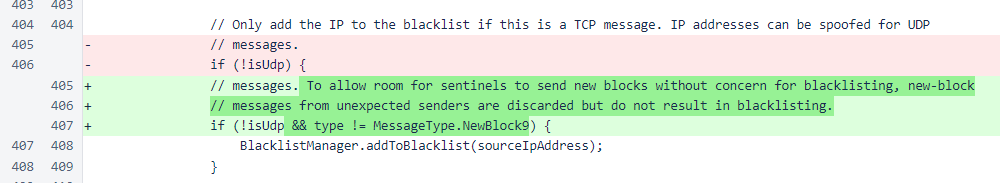

Nyzo version 531 (commit on GitHub) eliminates blacklisting for blocks received from unexpected verifiers.
This version only involves code running on the verifier. Though the changes affect how sentinels are treated, updating a sentinel to this version will not have any effect.
This change involves a single line of logic. In Message, a condition has been added to avoid blacklisting for new-block messages.
This change is necessary to allow the sentinel to broadcast blocks for new verifiers. This will help to avoid manipulation of the entry process with denial-of-service attacks. While sentinels can calculate which verifier should be voted into the cycle next, they are unable to know with certainty when the new-verifier votes have been cast throughout the cycle. This change reduces the possibility of a sentinel being temporarily blacklisted due to a timing issue in block transmission.
In a later version, changes will be made to the sentinel to allow it to broadcast blocks for new verifiers in appropriate circumstances. That change will be released after a sufficient proportion of the cycle has updated to version 531 or later.
When the version adding sentinel support for new-verifier blocks is released, multiple bounties will be awarded for the reports that led to these changes.